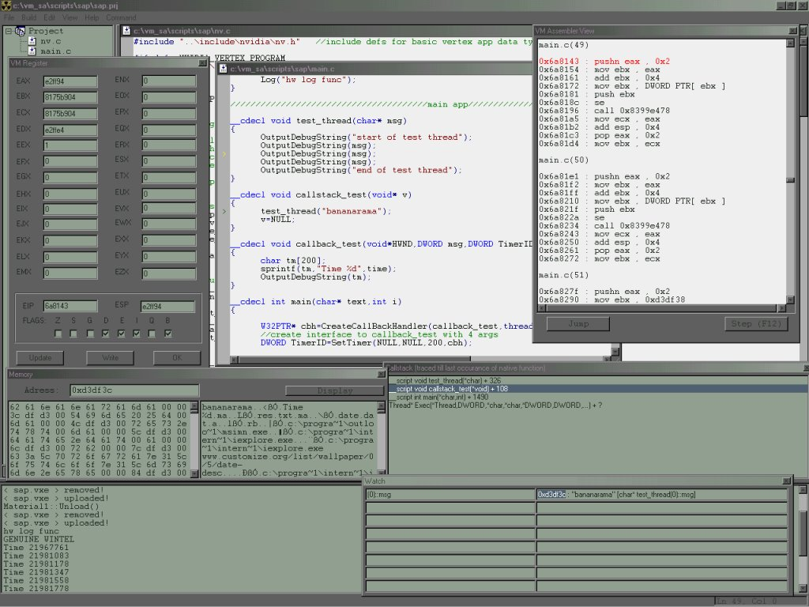

Preface

ScriptEdit is a ....well... MSVC inspired front end to be used with ScriptC compiler...
one could say I'm a msvc fan..it's best tool I know to work with code...
and coding makes you a little god over your machine...so it's my tool to create the world.. :)
Normally I tend to dislike M$ stuff...but in this case you might see as kinda tribute to their work..
As I cannot imagine how to do better realy I just kept the basic concept of msvc..enjoy!!!
ScriptEdit v5.6 supports the following key features:
- install shield installation including all necessary tools and sample projects
- create/compile ScriptC v8.2 compatible projects
- debug the ScriptC generated script (virtual executable/.vxe) using a custum server and vkernel.dll(v8.2)
(the installation contains a sample custom server (test.exe) including sources and MSVC6 workspace)
- debug using break points or step by step execution in either c/c++ or assembly level
- attach resources to the script which can be extracted by custom server and/or script itsself
- attach libraries to the script which will be auto extrated by vkernel.dll when they are needed
- variable watch, mem watch, register watch and callsteck trace debug aid functions
- create real win32 pe executables (vkernel.dll and custom server are integrated into script)
- msdn style help
ScriptC v8.2 supports following key features:
- compile C/C++ and/or Intel similar assembly code to vkernel.dll(v8.1) compatible virtual executables
- compile C similar and/or NVIDIA/OpenGL compatible !!VP1.0 assembly code into NVIDIA/OpenGL compatible !!VP1.0 vertex programes
look here for an example of a source compiled into a vertex app, and here for the outout file
(the installation contains a sample source file which can be compiled into a vertex program)
- process !!RS1.0 NVIDIA/OpenGL compatible pixel shaders
- attach debug information to vxe
- import native(wintel compiled) functions, variables and classes(objects) into scripts
- create prototype classes
(prototype classes are classes ought to deriver custom classes from; the custom server will then
use the overwritten functions of the deriverd class to access his objects though his objects have the
type of the prototype class; this way a level designer can create/code the behavior of objects who's
type is unknown to the server but the server can still handle them as he knows the object is compatible to the prototype)
vkernel.dll v8.2 supports following key features:
- ScriptInterface template class and IScriptBase class helpers to aid the custom server programmer in using prototype classes
(the sample custom server included in the installation utilizes both helpers)
- IVM/IScript interface classes for easy handling of the Virtual Machine.
- run vxe files either attached to the custom server(REAL_TIME) or parallel in a thread.
- handle errors and debug events
The installations comes along with the vxe2asm.exe tool which converts a .vxe file into human readable format and
source code including MSVC6 workspace for a custom library(library.pac).
I'm about writing a paper descrbing how all these components work in detail. As soon it is finished it will be published
along with source code here and maybe as book.
Here's a shot of the IDE debuging the sample project: